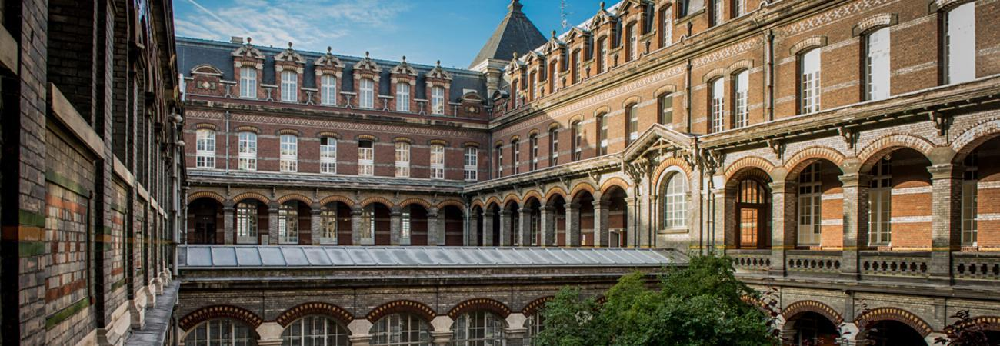
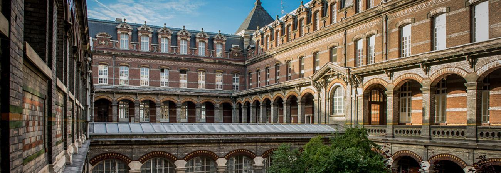
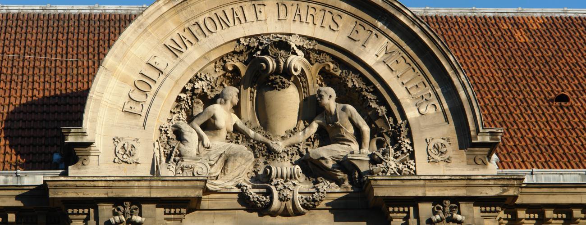
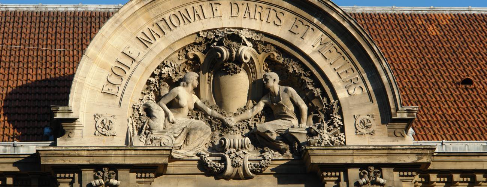
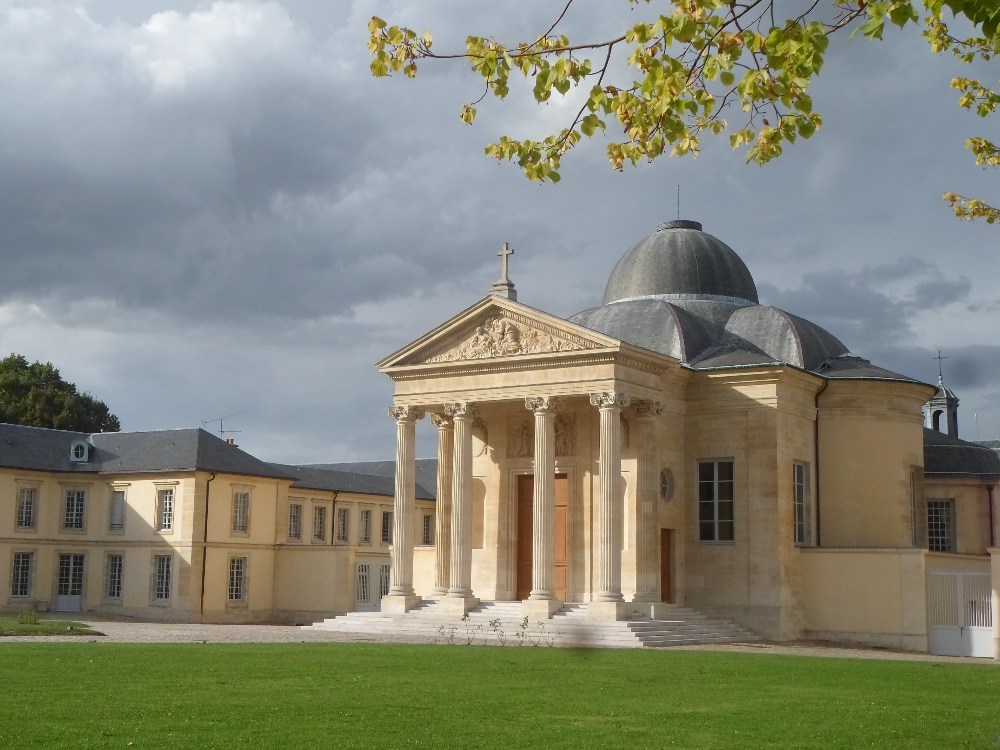
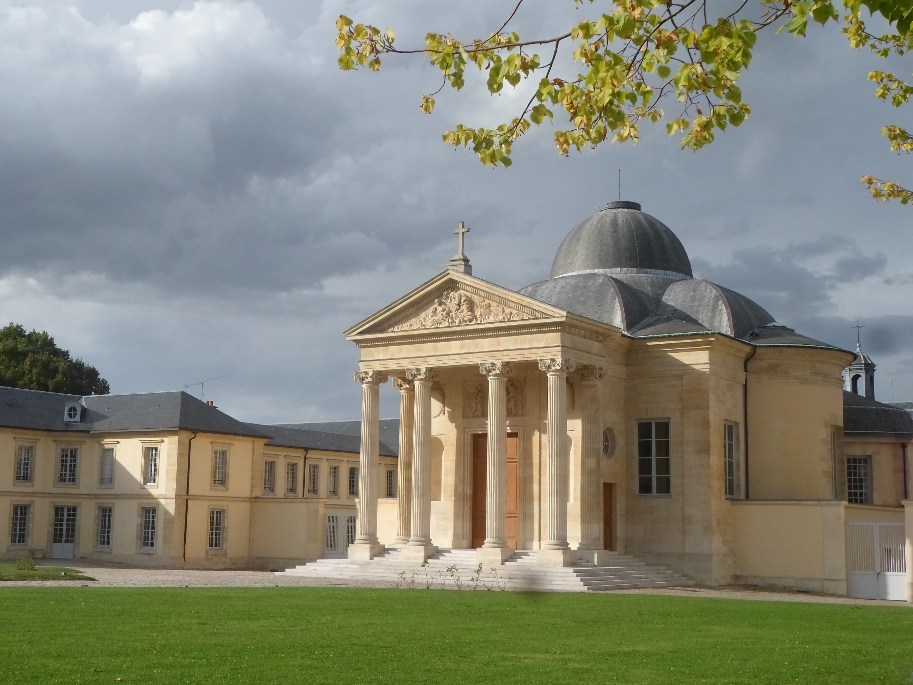

Academic Journey
Arts et Métiers ParisTech — Lille/Paris, France
Combined BS × MS Engineering Degree
Sept 2024 — July 2027
Multidisciplinary engineering curriculum combining mechanical design, manufacturing, and industrial systems with data analysis, project management, and innovation strategy. Trained to bridge advanced engineering, entrepreneurship, and leadership, fostering both technical excellence and strategic vision through hands-on projects and collaborative teamwork.
 

 

CPGE — Lycée Hoche, Versailles
MPSI - MP (Mathematics/Physics/Engineering Science)
Sept 2022 — July 2024
Elite undergraduate track in Advanced Mathematics & Physics : Highly selective two-year preparatory program. Trained in analytical thinking, abstraction, and rigorous problem-solving through intensive coursework and national-level competitive examinations.

 
